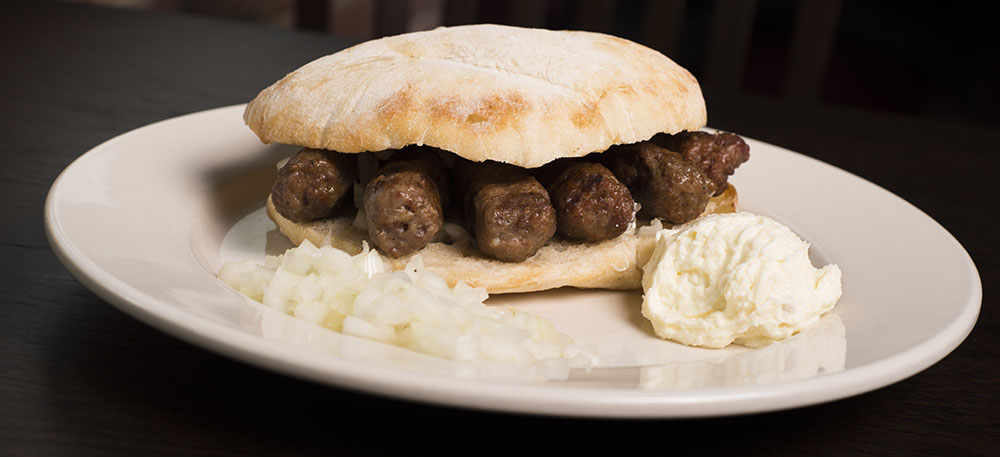

Cevapi

Description
Cevapi are easy to make, grilled sausages from Southeastern Europe that burst
with smoky flavor and are perfect for serving with flatbread and sliced onions.
Ingredients
- 1 lb ground beef, 85% lean
- ½ lb ground pork
- 3 garlic cloves, minced
- 1 ¼ tsp salt
- 1 tsp ground black pepper
- 1 tsp paprika
- ¾ tsp baking soda
Steps
- In a large bowl mix together all ingredients.
- Using slightly over 1 Tbsp of meat mixture per sausage, shape the mixture into sausages the size and shape of a fat finger.
- Place all the formed sausages in a single layer on a platter. Cover the platter and refrigerate for at least 1 hour.
- Preheat your grill to medium heat, 350-400⁰F.
- Grill the sausages using a fine grate grill pan for 4-5 minutes a side, until golden and springy.
- Serve the cevapi with sliced sweet onions and flatbread (like lepinja or pita).